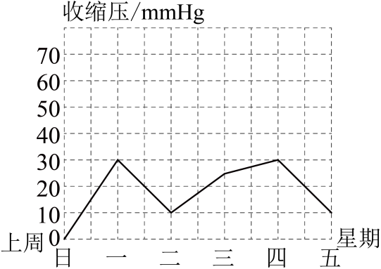
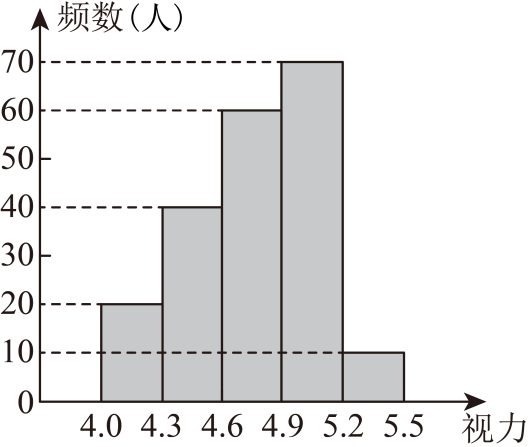
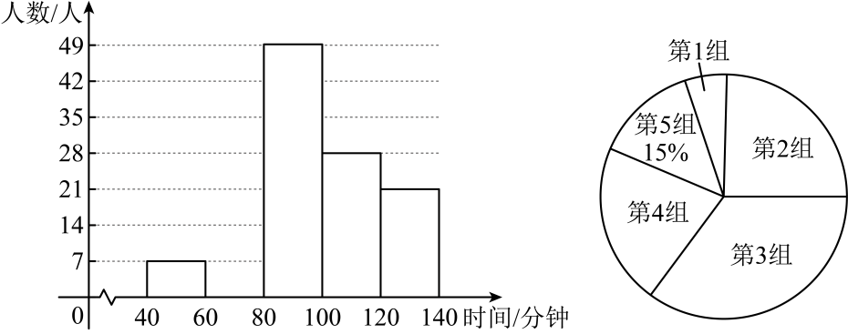
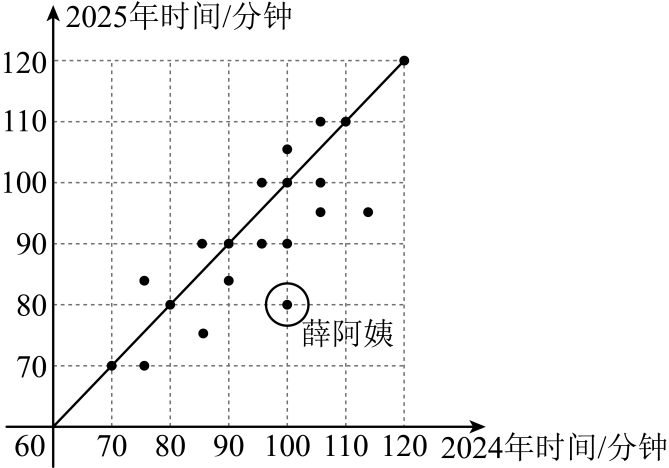
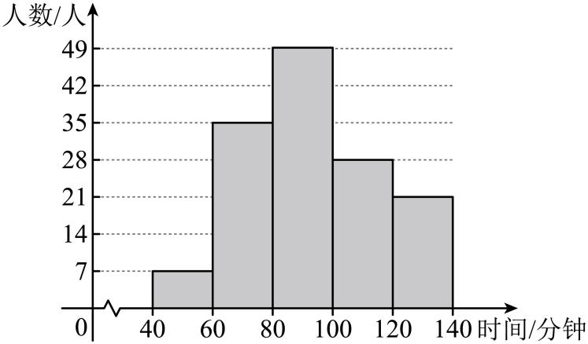

第六章 数据的收集与整理·培优卷
【北师大版2024】
参考答案与试题解析
一、选择题（本大题共10小题，每小题3分，满分30分）
1．（25-26八年级上·江苏无锡·期中）下列调查中，适宜采用普查方式的是（ ）
A．调查一批新型节能灯泡的使用寿命
B．调查常熟市中小学生的课外阅读时间
C．对全市中学生观看电影《厉害了，我的国》情况的调查
D．对卫星“张衡一号”的零部件质量情况的调查
【答案】D
【分析】本题考查了抽样调查与普查；普查适用于调查对象数量少、要求精度高或事关安全的情况；抽样调查适用于对象多、具有破坏性或普查困难的情况．根据各选项内容判断是否适合普查．
【详解】解：∵ A中灯泡寿命测试具有破坏性，宜抽样调查；
∵ B中中小学生数量多，普查耗时费力，宜抽样调查；
∵ C中全市中学生数量多，普查不现实，宜抽样调查；
∵ D中卫星零部件质量关系重大，必须全面检查，宜普查．
故选：D．
2．（24-25七年级下·云南丽江·期末）为了解某校七年级800名学生的期中数学测试成绩，调查小组随机抽取了200名学生的期中数学测试成绩进行调查，以下说法正确的是（ ）
A．七年级800名学生是总体 B．每名学生是个体
C．从中抽取的200名学生是样本 D．样本容量是200
【答案】D
【分析】本题考查了总体、个体、样本、样本容量的定义，解题要分清具体问题中的总体、个体与样本，关键是明确考查的对象．总体、个体与样本的考查对象是相同的，所不同的是范围的大小．样本容量是样本中包含的个体的数目，不能带单位．
根据总体、个体、样本、样本容量的定义逐一判断即可．
【详解】A、七年级800名学生的期中数学测试成绩是总体，原说法错误；
B、 每名学生的期中数学测试成绩是个体，原说法错误；
C、从中抽取的200名学生的期中数学测试成绩是样本，原说法错误；
D、 样本容量是200，原说法正确；
故选：D．
3．（25-26八年级上·全国·课后作业）当前，“低头族”已成为热门话题之一，小颖为了了解路边行人边走路边低头看手机的情况，她应调查的对象是（ ）
A．一定数量的某学校的学生 B．一定数量的路边行走的学生
C．一定数量的图书馆里看书的人 D．一定数量的路边行走的路人
【答案】D
【分析】本题考查调查对象的选择，根据调查目的选择调查对象即可，选择的对象要具有代表性和广泛性．
【详解】解：为了了解路边行人边走路边低头看手机的情况，她应调查的对象是：一定数量的路边行走的路人，不能是某学校的学生、路边行走的学生、图书馆里看书的人等特定的群体，
故选：D．
4．（24-25七年级上·四川成都·期末）下列古诗词中，涉及到的数据主要是定性数据的是（ ）
A．飞流直下三千尺，疑是银河落九天； B．忽如一夜春风来，千树万树梨花开；
C．锦瑟无端五十弦，一弦一柱思华年； D．取友但论诗好恶，逢人不说位高卑．
【答案】D
【分析】本题考查的知识点是常量和变量，解题关键是正确理解定性数据和定量数据的定义．
根据定性数据和定量数据的定义逐一判断即可．
【详解】解：A选项，“三千尺”是定量数据，不是定性数据，不符合题意，A选项错误；
B选项，“千树万树”是定量数据，不是定性数据，不符合题意，B选项错误；
C选项，“五十弦”是定量数据，不是定性数据，不符合题意，C选项错误；
D选项，“好恶”“高卑”是定性数据，符合题意，D选项正确．
故选：D．
5．（24-25七年级下·全国·单元测试）期中调研日期为“2025年04月20日”，日期中出现的频率相同的数字是（ ）
A．0和4 B．0和5 C．2和4 D．0和2
【答案】D
【分析】本题考查了频率，掌握频数与总次数的比值等于频率是解题关键．根据频率的定义，分别求出每个数字出现的频率，对比即可得出答案．
【详解】解：因为在“2025年04月20日”中，共有0，2，5，4四种数字，其中0出现了3次，2出现了3次，5出现了1次，4出现了1次，
所以数字0和2出现的频率都为33+3+1+1=0.375，数字5和4出现的频率都为13+3+1+1=0.125，
所以数字0和2出现的频率相同，5和4出现的频率相同．
故选：D．
6．某校为了了解学生在校午餐所需的时间，抽取了20名学生在校午餐所需时间，获得如下的数据（单位：分）：12、12、15、11、16、18、19、18、20、18、18、20、28、22、30、20、15、16、21、16．若将这些数据以4分为组距进行分组，则组数是（ ）
A．4组 B．5组 C．6组 D．7组
【答案】B
【分析】本题考查的是频数(率)分布表中的组数的计算，
根据组数=(最大值-最小值)÷组距(小数部分要进位)即可求解．
【详解】解：因为30−11÷4=4.75，
所以组数为5．
故选：B．
7．某校组织全体学生进行义卖活动，从中抽取部分学生义卖所得金额制成如图所示的频数直方图，那么义卖所得金额在20—30元的人数占的百分比为（ ）

A．15% B．25% C．40% D．50%
【答案】B
【分析】本题考查了频数分布直方图，根据频数分布直方图可知，金额在20~30元的人数是50人，除以200即可，熟练掌握频数分布直方图，频率的计算，是解决问题的关键．
【详解】解：根据统计图可知抽取学生人数为10+30+50+80+30=200（人），
∴金额在20~30元的人数占的百分比是50200×100%=25%，
故选：B．
8．（24-25七年级上·全国·课后作业）某学校即将开展趣味运动会，因此对学生们的兴趣爱好进行调查．调查结果发现，七年级某班学生中有8人喜欢足球，12人喜欢篮球，15人喜欢乒乓球，10人喜欢羽毛球，为了清楚地表示并比较喜欢各种球类活动的具体人数，应选用的统计图是（ ）
A．条形统计图 B．折线统计图 C．扇形统计图 D．无法确定
【答案】A
【分析】本题考查统计图的选择，根据条形图能够很直观的表示出各部分的数据，扇形图能够表示出各部分的百分比，折线图能够表示出数据的变化趋势，进行判断即可．
【详解】解：为了清楚地表示并比较喜欢各种球类活动的具体人数，应选用的统计图是条形统计图；
故选A．
9．（2024·福建·模拟预测）糖类、脂类、蛋白质、矿物质、维生素和水是人体必需的六大营养物质，其中糖类、脂类和蛋白质属 于供能物质，水、矿物质和维生素是非供能物质．某种食物中的营养物质占比情况如扇形统计图 所示（“其他”既不是供能物质，也不是非供能物质），则下列判断正确的是（ ）
A．六大营养物质总占比为90%
B．蛋白质占比最多
C．供能物质比非供能物质总占比少14%
D．扇形统计图中，“蛋白质”对应的扇形圆心角度数为61.2°
【答案】D
【分析】本题考查从扇形统计图推断结论，正确读懂统计图是解题的关键．
六大营养物质总占比可由1减去其他物质的占比求解，即可判断A；由扇形统计图即可得到水占比最多，即可判断B；分别计算供能物质和非供能物质占比，即可判断C；“蛋白质”对应的扇形圆心角度数由360°乘以占比求解，即可判断D．
【详解】解：A、六大营养物质总占比为1−20%=80%，故A错误，本选项不符合题意；
B、水占比最多，故B错误，本选项不符合题意；
C、供能物质占比：25.5%+4.5%+17%=47%；非供能物质占比：24.5%+2%+6.5%=33%，47%−33%=14%，则供能物质比非供能物质总占比多14%，故C错误，本选项不符合题意；
D、“蛋白质”对应的扇形圆心角度数为360°×17%=61.2°，故D正确，故本选项符合题意；
故选：D．
10．（24-25七年级下·全国·单元测试）某景区在“五一”国际劳动节期间每日的人流量如图1所示，该景区的每日人流量占该地区每日总人流量的百分比如图2所示．下列说法错误的是（ ）

A．该景区的每日人流量占该地区总人流量的百分比先增加后减少
B．该景区在“五一”国际劳动节期间的每日人流量在逐日增加
C．该景区在5月3日人流量占该地区总人流量的百分比达到最高
D．该地区5月4日的总人流量比5月5日的总人流量多
【答案】D
【分析】本题考查了条形统计图，折线统计图，解题的关键是从图中得出准确数据．根据题意统计图，逐项分析判断，即可求解．
【详解】A．该景区的每日人流量占该地区总人流量的百分比先增加后减少，符合折线统计图的表示，不符合题目要求；
B．该景区在“五一”国际劳动节期间的每日人流量在逐日增加，符合条形统计图的表示，不符合题目要求；
C．该景区在5月3日人流量占该地区总人流量的百分比达到最高，符合折线统计图的表示，不符合题目要求；
D．因为33.540.2%>30.844.8%，所以该地区5月4日的总人流量比5月5日的总人流量少了，此说法不符合折线统计图的表示，符合题目要求．
故选：D．
二、填空题（本大题共6小题，每小题3分，满分18分）
11．（2025·江苏扬州·一模）为了估计鱼塘中鱼的数量，养鱼者先从鱼塘中捕获50条鱼，在每一条鱼身上做好标记后把这些鱼放归鱼塘，过了一段时间，待有标记的鱼完全混合于鱼群后，再从鱼塘中捕捞鱼．通过多次捕捞实验后，发现捕捞的鱼中有作记号的频率稳定在5%，据此可估计该鱼塘中鱼的条数为 ．
【答案】1000
【分析】本题考查了利用样本频率估计总体，设鱼塘中有鱼x条，利用频率估计概率得到50x= 5%，然后解方程即可．
【详解】解：设鱼塘中有鱼x条，
根据题意得50x= 5%，
解得x=1000，
所以估计鱼塘中有鱼1000条．
故答案为：1000．
12．为了了解某厂生产的2000台冰箱的质量情况，把这2000台冰箱编上序号，然后用抽签的方法抽取100台，这种抽样方法是 ，这种抽样方法 (填“具有”或“不具有”)代表性．
【答案】 简单随机抽样 具有
【分析】根据随机抽样的定义解答即可.
【详解】把这2000台冰箱编上序号，然后用抽签的方法抽取100台，具有随机性和代表性，所以这种抽样方法是随机抽样，这种抽样方法具有代表性.
故答案为简单随机抽样， 具有
【点睛】本题考查了随机抽样，为了获取能够客观反映问题的结果，通常按照总体中每个个体都有相同的被抽取机会的原则抽取样本，这种抽样的方法叫做随机抽样.样本的选取应具有随机性、代表性、容量应足够大.
13．（24-25六年级上·山东泰安·阶段练习）学习委员调查本班学生一周内课外阅读情况，按照阅读时间进行统计，结果如表：
阅读时间 | 2小时以下 | 2~4小时 | 4小时以上 |
人数 | 20 | 16 | a |
百分比 | b | c | 25% |
则表中a的值为 ．
【答案】12
【分析】本题主要考查统计表．先用4小时及以下人数除以其所占百分比得出总人数，再用总人数乘以4小时以上人数所占比例即可求解．
【详解】解：∵被调查的总人数为20+16÷1−25%=36÷75%=48（人）
∴a=48×25%=12（人）
故答案为：12．
14．（24-25七年级上·云南保山·期末）如图，为了解800m跑后学生心率的分布情况，体育老师统计了全班48名学生800m赛跑后一分钟的脉搏情况，并根据收集的数据画出了频数分布直方图．则被阴影部分遮住的小长方形的高表示的频数是 ．

【答案】11
【分析】本题考查了频数分布直方图，根据各组人数之和等于总人数可得答案，解题的关键是掌握各组人数之和等于总人数．
【详解】解：被墨水盖住部分的频数为48−1−2−4−6−8−14−2=11，
故答案为：11．
15．在频数分布直方图中，有11个小长方形，若中间一个小长方形的面积等于其它10个小长方形面积和的14，频数分布直方图中有150个数据，则中间一组的频数为 ．
【答案】30
【分析】设中间一个小长方形的面积为x，则其他10个小长方形的面积的和为4x，中间有一组数据的频数是：xx+4x×150．
【详解】解：∵在频数分布直方图中，有11个小长方形，若中间一个小长方形的面积等于其它10个小长方形面积和的14，
∴设中间一个小长方形的面积为x，则其它10个小长方形的面积的和为4x，
∵共有150个数据，
∴中间有一组数据的频数是：xx+4x×150＝30．
故答案为：30．
【点睛】本题考查了对频率、频数灵活运用，各小组频数之和等于数据总和，各小组频率之和等于1．理解直方图的定义是解题的关键．
16．（24-25七年级下·全国·单元测试）下图是根据某中学为山区儿童购买图书捐款的情况而制作的统计图，已知该校在校学生3000人，请根据统计图计算该校共捐款 元．
【答案】37770
【分析】本题考查了统计图的应用．
先求出每个年级的人数，再根据每个年级的人均捐款数计算即可．
【详解】初一人数为3000×32%=960（人）；
初二人数为3000×33%=990（人）；
初三人数为3000×35%=1050（人）．
该校共捐款960×15+990×13+1050×10=37770（元）．
故答案为：37770．
三、解答题（本大题共8小题，满分72分）
17．（6分）（24-25八年级下·河北唐山·期末）某校拟开设四门校本课程供学生选择：文学鉴赏，趣味数学，传统工艺，航模科技．为了解该校八年级600名学生对四门校本课程的选择意向，张老师做了以下工作：
①随机收集八年级40名学生对四门课程的选择意向；
②绘制统计图来表示学生对这四门课程的选择意向；
③整理这40名学生的选择意向并绘制统计表；
④结合统计图分析学生对这四门课程的选择意向．
请根据上述信息解答下列问题：
(1)下面对张老师的工作步骤排序正确的是（ ）
A．①②③④ B．①③②④ C．②①③④ D．③②①④
(2)张老师采用的调查方式是______（填：“普查”或“抽样调查”）
(3)如图，张老师绘制的40名学生所选科目的条形统计图．假设全年级每位学生都做出了选择，且只选择了一门课程．若学校规定每个班级不超过40人，请你根据图中信息，估计该校八年级至少应该开设几个趣味数学班．

【答案】(1)①③②④
(2)抽样调查
(3)估计该校八年级至少应该开设3个趣味数学班．
【分析】（1）根据正确的工作步骤填空即可；
（2）根据抽样调查和普查特点可得；
（3）用八年级的总人数乘以选择趣味数学班的学生所占的百分比即可求解．
【详解】（1）解：张老师的工作步骤，随机收集八年级40名学生对四门课程的选择意向；整理这40名学生的选择意向并绘制统计表；绘制统计图来表示学生对这四门课程的选择意向；结合统计图分析学生对这四门课程的选择意向．
故答案为：①③②④；
（2）解：张老师采用的调查方式是抽样调查；
（3）解：600名学生选择B．趣味数学的人数有：600×840=120（名），
120÷40=3（个）
估计该校八年级至少应该开设3个趣味数学班．
【点睛】本题考查条形统计图、用样本估计总体，解答本题的关键是明确题意，找出所求问题需要的条件，利用数形结合的思想解答．
18．（6分）乌蒙大草原位于贵州省六盘水市盘州市乌蒙镇与坪地彝族乡境内，当地人称之为“坡上草原”，景区总面积178平方公里．春天，这里的杜鹃花海美得不可方物，可以去这里踏青赏花；夏天，这里气温平均17°C，是最佳的避暑胜地．草原上可以进行各种户外活动，是暑假旅游的绝佳选择．为了迎接暑假，了解游客爱好，更好的服务好前来旅游的客人，景区某工作人员在一段时间内，随机抽取了部分前来旅游的游客对喜欢的户外活动项目进行问卷调查，并对调查结果进行整理（调查问卷全部收回，每位游客只能选填一种喜欢的项目），绘制成下面两幅不完整的图表：请根据图表中提供的信息回答下列问题：
喜欢各种户外活动的游客统计表
项目 | 频数 |
滑草 | a |
骑马 | 150 |
露营 | 250 |
烧烤 | 300 |
射箭 | 120 |
其它 | 100 |
喜欢各种户外活动的游客分布情况

(1)本次发放的调查问卷为___________份，喜欢滑草的游客人数为___________人；
(2)在扇形统计图中，喜欢烧烤活动的游客人数所对应的圆心角度数为___________．
(3)若某段时间内接待的游客为100000人次，请估计这100000人中喜欢射箭的游客人数．
【答案】(1)108°
(2)1000；80
(3)12000
【分析】本题考查统计表、扇形统计图、用样本估计总体看懂统计图，准确获取有用信息并正确计算是解答的关键．
(1)由喜欢露营人数除以其所占的百分比可求得调查问卷份数，喜欢滑草的游客人数=总人数−其他频数；
(2)利用圆心角的度数等于360°乘以烧烤活动人数所占的百分比求解即可；
(3)由总人数乘以喜欢射箭的游客人数所占的百分比求解即可．
【详解】（1）根据题意，问卷调查中喜欢露营的有250人，占25%，
∴250÷25%=1000（人），
即本次发放的调查问卷为1000份，
喜欢滑草的游客人数a=1000−150−250−300−120−100=80（人），
故答案为：1000；80；
（2）由题知问卷调查中喜欢烧烤的有300人，
喜欢烧烤活动的游客人数所对应的圆心角度数为360°×3001000=108°；
故答案为：108°；
（3）由题知，问卷调查中喜欢射箭的有120人，
所以估计这100000人中喜欢射箭的游客人数有100000×1201000=12000（人）．
19．（8分）（2025·江苏镇江·一模）随着移动终端设备的升级换代，手机已经成为我们生活中不可缺少的一部分，为了解中学生在假期使用手机的情况(选项：A、和同学亲友聊天；B、学习；C、购物；D、游戏；E、其它)，五一节后某中学在全校范围内随机抽取了若干名学生进行调查，得到下表(部分信息未给出)：
选项 | A | B | C | D | E |
频数 | 10 | n | 5 | p | 5 |
频率 | m | 0.2 | 0.1 | 0.4 | 0.1 |
根据以上信息解答下列问题：
(1)这次被调查的学生有多少人？
(2)求表中m，n，p的值．
(3)若该中学约有1000名学生，估计全校学生中利用手机购物或玩游戏的共有多少人？并根据以上调查结果，就中学生如何合理使用手机给出你的一条建议．
【答案】(1)这次被调查的学生有50人
(2)m=0.2，n=10，p=20
(3)全校学生中利用手机购物或玩游戏的约有500人，利用手机购物或玩游戏的占调查人数的50%，因此要加强对学生使用手机的管理
【分析】本题考查频数与总数之间的运算关系，样本估计总体等知识点；
（1）利用“总数=频数÷百分比”直接进行计算即可；
（2）利用“频数=总数×百分比，百分比=频数÷总数”直接进行计算即可；
（3）用1000乘以手机购物或玩游戏的总百分比即可，根据题意给出合理建议，即可．
【详解】（1）解： 5÷0.1=50(人)，
答：这次被调查的学生有50人；
（2）m=10÷50=0.2，
n=50×0.2=10(人)，
p=50×0.4=20(人)，
答：m=0.2，n=10，p=20；
（3）1000×(0.1+0.4)=500(人)，
答：全校学生中利用手机购物或玩游戏的约有500人，
利用手机购物或玩游戏的占调查人数的50%，因此要加强对学生使用手机的管理．
20．（8分）（25-26七年级上·河南驻马店·阶段练习）一位患者每天下午需要测量一次血压，下表是该患者星期一至星期五收缩压的变化情况，该患者上个星期日的收缩压为160mmHg．（“+”表示收缩压比前一天上升，“−”表示收缩压比前一天下降）
星期 | 一 | 二 | 三 | 四 | 五 |
收缩压的变化/mmHg | +30 | −20 | +15 | +5 | −20 |

(1)请算出该患者星期五的收缩压（要求先列式后计算）
(2)以上个星期日的收缩压为O点，请把折线统计图补充完整
(3)若收缩压大于或等于180mmHg为重度高血压，该患者本周哪几天的血压属于这个范围
【答案】(1)170mmHg，列式见解析
(2)见解析
(3)周一、周三、周四
【分析】本题考查折线统计图的意义和绘制方法，理解数值的增长变化情况是绘制折线统计图的关键．
（1）根据每天的增长情况计算即可；
（2）根据增长变化的数值，绘制折线统计图即可；
（3）根据折线统计图，可直观得出答案．
【详解】（1）解：160+30−20+15+5−20
=170（mmHg）
答：星期五该病人的收缩压是170mmHg；
（2）解：根据收缩压的变化情况，绘制折线统计图，

（3）解：由折线统计图得，周一、周三、周四的收缩压大于或等于180mmHg，是重度高血压．
21．（10分）（25-26八年级上·广西南宁·开学考试）某市在今年对全市16000名七年级学生进行了一次视力抽样调查，并根据统计数据，制作了统计表和如图所示的统计图．
组别 | 视力 | 频数 |
A | 4.0≤x<4.3 | 20 |
B | 4.3≤x<4.6 | a |
C | 4.6≤x<4.9 | b |
D | 4.9≤x<5.2 | 70 |
E | 5.2≤x<5.5 | 10 |

请根据图表信息回答下列问题：
(1)本次视力抽样调查抽取了______人，表中a=______，b=______，m=_____．
(2)请补全频数分布直方图；
(3)若视力在4.9以上（含4.9）均属正常，根据上述信息估计该市今年七年级的学生视力正常的大约有多少人．
【答案】(1)200；40，60，30；
(2)见解析
(3)6400人
【分析】本题考查的是条形统计图和扇形统计图的综合运用．
（1）先根据4.0≤x<4.3的频数除以频率求出被调查的总人数，用总人数乘以频率20%计算即可得到a，用总人数减去其他频数求出b，再用b除以总人数，即可求出m的值；
（2）根据（1）求出a，b的值，即可补全统计图；
（3）求出后两组的频率之和即可求出视力正常的人数占被统计人数的百分比，用总人数乘以所占的百分比即可得解．
【详解】（1）解：抽样调查的人数是：20÷10%=200（人）；
a=200×20%=40（人）；
b=200−20+40+70+10=60（人）；
m%=60200×100%=30%，则m=30，
故答案为：200，40，60，30；
（2）解：根据（1）求出a，b的值，补图如下：

（3）解：视力正常的人数占被统计人数的百分比是：35%+5%=40%；
根据题意得：16000×40%=6400（人）
答：估计该市今年七年级的学生视力正常的学生大约有6400人．
22．（10分）（24-25七年级下·贵州贵阳·阶段练习）下面两个统计图反映的是某超市5月份甲、乙两种洗衣粉的销售情况和顾客满意度情况．

请根据图中提供的信息，解答下列问题：
(1)从折线图可以看出：
①甲种洗衣粉在第 周的销售量达到最大，是 袋；
②乙种洗衣粉在第 周的销售量达到最大，是 袋．
(2)从折线图可以看出 种洗衣粉的销售量在整体提升，从条形图可以看出 种洗衣粉的满意度不好．（均填“甲”或“乙”）
(3)通过观察两个统计图，发现顾客满意度和洗衣粉的销售量有何关系？
【答案】(1)①四，120；②二，102
(2)甲，乙
(3)通过观察两个统计图，发现顾客满意度高，洗衣粉的销售量就会上升；顾客满意度低，洗衣粉的销售量就会下降
【分析】（1）①根据折线图，看出甲种洗衣粉在第四周的销售量达到最大，是120袋；
②乙种洗衣粉在第二周的销售量达到最大，是102袋．
（2）从折线图可以看出甲种洗衣粉的销售量在整体提升，从条形图可以看出乙种洗衣粉的满意度不好．
（3）顾客满意度越高，销售量就越好．
本题考查了折线统计图的意义，熟练掌握统计图的意义是解题的关键．
【详解】（1）解：①根据折线图，看出甲种洗衣粉在第四周的销售量达到最大，是120袋；
故答案为：四，120．
②解：根据题意，得乙种洗衣粉在第二周的销售量达到最大，是102袋．
故答案为：二，102．
（2）解：根据题意，得从折线图可以看出甲种洗衣粉的销售量在整体提升，从条形图可以看出乙种洗衣粉的满意度不好．
故答案为：甲，乙．
（3）解：通过观察两个统计图，发现顾客满意度高，洗衣粉的销售量就会上升；顾客满意度低，洗衣粉的销售量就会下降．
23．（12分）（25-26九年级上·吉林长春·月考）为了解社区居民使用共享单车时间情况，调查组连续两年开展调查．
(1)调查组2024年随机对该社区选择共享单车出行的部分居民进行了调研，获得了他们每周使用共享单车时间（单位：分钟）的数据，并将收集到的数据进行整理和描述，结果如图：
组别 | 使用时间（分钟） | 频数（人数） |
第1组 | 40≤x<60 | 7 |
第2组 | 60≤x<80 | a |
第3组 | 80≤x<100 | 49 |
第4组 | 100≤x<120 | 28 |
第5组 | 120≤x<140 | 21 |

①本次调研，随机抽取 名社区居民进行调查；
②请补全频数分布直方图；
③若该社区共有1400位居民选择使用共享单车出行，请你估计每周使用共享单车的时间不小于1小时的居民有多少人；
(2)调查组2025年对坚持选择共享单车出行的20名社区居民进行了跟踪调查，绘制了统计图（如图）．

①薛阿姨2025年每周使用共享单车时间比2024年的使用时间 （填“多”或“少”）；
②将这20名居民中2025年每周使用共享单车时间超过2024年使用时间的人数记为m，其余人数记为n，则m n（填“>”、“=”、<”）．
【答案】(1)①140；②见解析；③1330
(2)①少；②<
【分析】本题考查频数发布直方图、扇形统计图、样本估计总体的思想等知识，解题的关键是掌握基本概念，结合图象求解．
（1）①用第5组的频数除以15%计算即可；
②用总人数分别减去其它组人数即可得出a的值，补全统计图即可；
③用样本估计总体的思想即解决问题；
（2）①结合图象直接得出薛阿姨2025年每周使用共享单车时间为80分钟，2024年的使用时间为100分钟，即可求解；②根据图象位于上半部分的即为2025年每周使用共享单车时间超过2024年使用时间的人数，即可求解
【详解】（1）解：①21÷15%=140，
故答案为：140；
②由图得第2组的人数为：a=140−7−49−28−21=35，
补全频数分布直方图如下：

③若该社区共有1400位居民选择使用共享单车出行，请你估计每周使用共享单车的时间不小于1小时的居民有1400×1−7140=1330人
（2）①由统计图得：横轴表示2024年的使用时间，纵轴表示2025年的使用时间，
薛阿姨2025年每周使用共享单车时间为80分钟，2024年的使用时间为100分钟，
∴薛阿姨2025年每周使用共享单车时间比2024年的使用时间少；
②由统计图得：2025年每周使用共享单车时间超过2024年使用时间的人数为5，即m=5，其余人数为15，即n=15，
∴m<n，
故答案为：①少；②<
24．（12分）（25-26八年级上·广西南宁·期中）某希望中学做了如下表的调查报告（不完整）：
调查目的 | 了解本校学生：（1）周家务劳动的时间；（2）最喜欢的劳动课程 |
调查方式 | |
调查对象 | 部分七年级学生（该校所有学生周家务劳动时间都在1~3.5h范围内） |
调查内容 | （1）你的周家务劳动时间（单位：h）是①1~1.5②1.5~2③2~2.5④2.5~3⑤3∼3.5 （2）你最喜欢的劳动课程是（必选且只选一门） A．家政 B．烹饪 C．剪纸 D．园艺 E．陶艺 |
调查结果 |
|

结合调查信息，回答下列问题：
(1)①本次调查的方式是__________（填“全面调查”或“抽样调查”）；
②参与本次问卷调查的学生人数为多少人？
(2)在扇形统计图中，第④组所对应扇形的圆心角的度数是多少？
(3)若该校七年级学生共有800人，请估计最喜欢“烹饪”课程的学生人数．
【答案】(1)①抽样调查；②参与本次问卷调查的学生人数为100人
(2)第④组所对应扇形的圆心角的度数是126°
(3)估计最喜欢“烹饪”课程的学生人数为176人
【分析】本题考查了频数直方图，扇形统计图，样本估计总体，看懂统计图是解题的关键．
（1）①根据题意可判断出本次调查的方式是抽样调查；②用周家务劳动时间在1.5~2h的人数除以其百分比可求出参与本次问卷调查的学生人数；
（2）求出扇形统计图中④占本次问卷调查的学生人数的百分比，再乘以360°，即可求出所对应扇形的圆心角的度数；
（3）求出被调查人数中喜欢“烹饪”课程的学生人数，再用800乘以喜欢“烹饪”课程的学生人数占比即可求解．
【详解】（1）解：①根据题意可判断出本次调查的方式是抽样调查，
故答案为：抽样调查；
②20÷20%=100（人），
答：参与本次问卷调查的学生人数为100人；
（2）解：扇形统计图中④所对应扇形的圆心角的度数为360°×35100=126°．
答：第④组所对应扇形的圆心角的度数是126°；
（3）解：调查人数中喜欢“烹饪”课程的学生人数为100−18−20−24−16=22，
∴800×22100=176（人），
答：估计最喜欢“烹饪”课程的学生人数为176人．